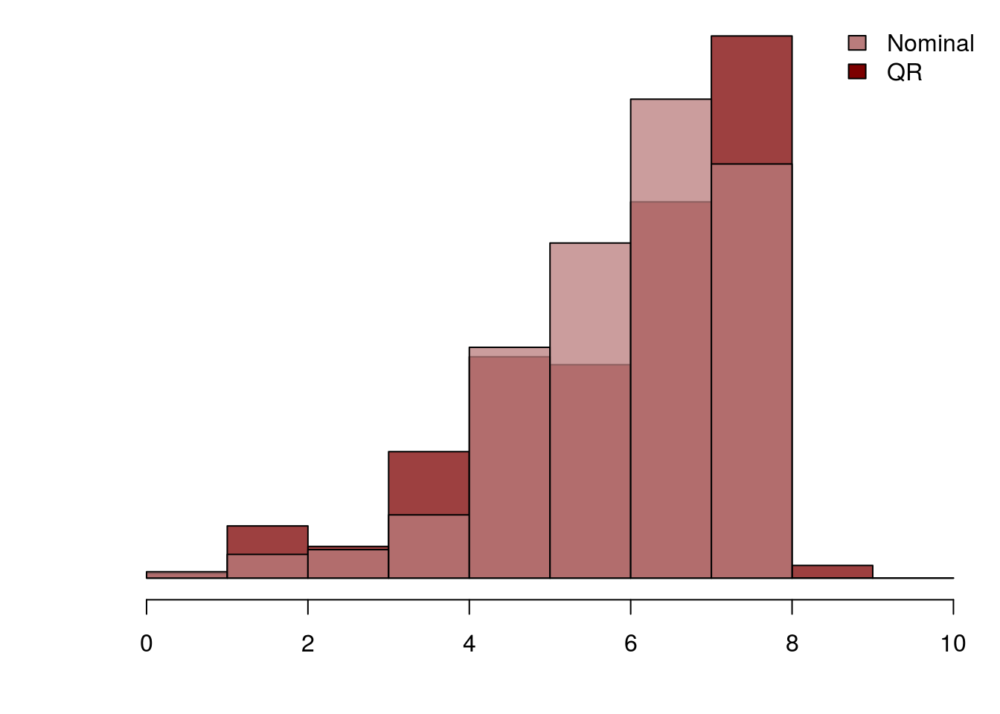
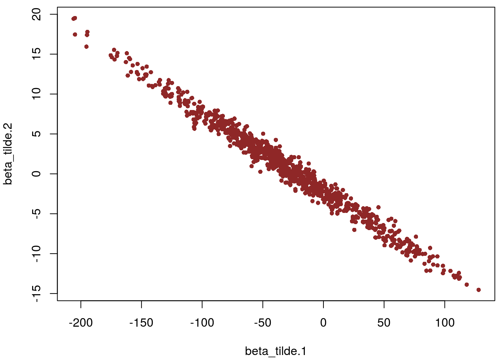
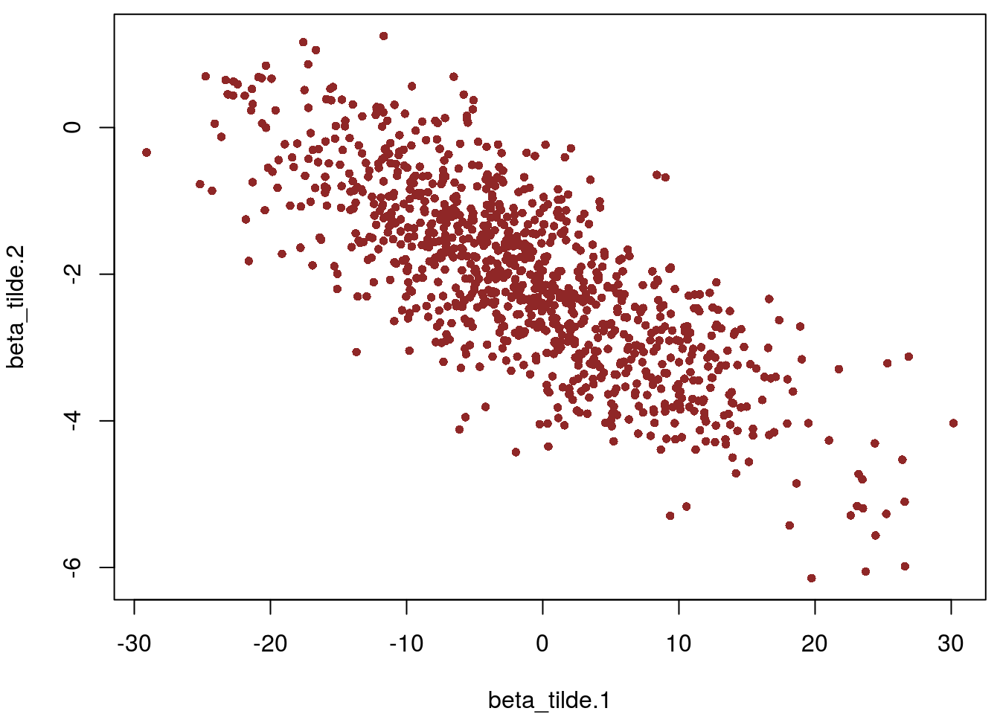
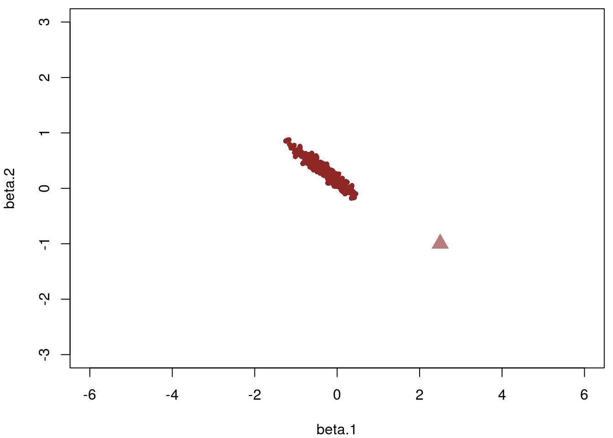

The QR Decomposition For Regression Models
Michael Betancourt
June 2017
A common problem with regression modeling is correlation amongst the covariates which induces strong posterior correlations that can frustrate accurate computation with those models. In this case study I will review the QR decomposition, a technique for decorrelating the covariates and, hence, the resulting posterior distribution.
We’ll begin with a simple example that demonstrates the pathological behavior of correlated covariates before going through the mathematics of the QR decomposition and how it can be applied in Stan.
Decorrelating the Posterior with a QR Decomposition
Fortunately we can remove the correlations between the covariates, and eliminate the pathological behavior of the Bayesian posterior, by applying a QR decomposition. Perhaps unsurprisingly this is the same QR decomposition that arises in the analytic maximum likelihood and conjugate Bayesian treatment of linear regression, although here it will be applicable regardless of the choice of priors and for any general linear model.
Mathematical Derivation
The thin QR decomposition decomposes a rectangular \(I \times J\) matrix into \[ \mathbf{A} = \mathbf{Q} \cdot \mathbf{R} \] where \(\mathbf{Q}\) is an \(I \times I\) orthogonal matrix and \(\mathbf{R}\) is a \(I \times J\) upper-triangular matrix.
If we apply the decomposition to the transposed design matrix, \(\mathbf{X}^{T} = \mathbf{Q} \cdot \mathbf{R}\), then we can refactor the linear response as \[ \begin{align*} \boldsymbol{\mu} &= \mathbf{X}^{T} \cdot \boldsymbol{\beta} + \alpha \\ &= \mathbf{Q} \cdot \mathbf{R} \cdot \boldsymbol{\beta} + \alpha \\ &= \mathbf{Q} \cdot (\mathbf{R} \cdot \boldsymbol{\beta}) + \alpha \\ &= \mathbf{Q} \cdot \widetilde{\boldsymbol{\beta}} + \alpha. \\ \end{align*} \]
Because the matrix \(\mathbf{Q}\) is orthogonal, its columns are independent and consequently we’d expect the posterior over the new parameters, \(\widetilde{\boldsymbol{\beta}} = \mathbf{R} \cdot \boldsymbol{\beta}\), to be significantly less correlated.
Moreover, we can readily recover the original slopes as \[ \boldsymbol{\beta} = \mathbf{R}^{-1} \cdot \widetilde{\boldsymbol{\beta}}. \] Because \(\mathbf{R}\) is upper diagonal we don’t have to construct its inverse explicitly and can instead solve for \(\boldsymbol{\beta}\) with only \(\mathcal{O} (M^{2})\) operations.
Finally, the transformation between \(\boldsymbol{\beta}\) and \(\widetilde{\boldsymbol{\beta}}\) is linear so the corresponding Jacobian is depends only on the data. This means that in Stan we can define the transformed parameters \(\boldsymbol{\beta} = \mathbf{R}^{-1} \cdot \widetilde{\boldsymbol{\beta}}\) and apply priors directly to \(\boldsymbol{\beta}\) while ignoring the warning about Jacobians.
On the other hand, applying weakly-informative priors to the \(\widetilde{\boldsymbol{\beta}}\) directly can be interpreted as a form of empirical Bayes where we use the correlations in the data guide the choice of prior.
Implementation in Stan
With the components of the thin QR decomposition added to the input data,
qr_decomp = qr(t(X)) # defaults to thin QR decomposition
Q = qr.Q(qr_decomp)
R = qr.R(qr_decomp)
stan_rdump(c("N", "M", "Q", "R", "y"), file="qr_regression.data.R")we can readily construct the corresponding QR regression in Stan,
writeLines(readLines("qr_regression.stan"))data {
int<lower=1> N;
int<lower=1> M;
matrix[N, M] Q;
matrix[M, M] R;
vector[N] y;
}
parameters {
vector[M] beta_tilde;
real alpha;
real<lower=0> sigma;
}
transformed parameters {
// Lots of transposing because Stan doesn't
// have a mdivide_right_tri_upper
vector[M] beta = mdivide_right_tri_low(beta_tilde', R')';
}
model {
beta ~ normal(0, 10);
alpha ~ normal(0, 10);
sigma ~ cauchy(0, 10);
y ~ normal(Q * beta_tilde + alpha, sigma);
}The decorrelated model immediately achieves higher effective sample size with no indication of pathologies.
input_data <- read_rdump("qr_regression.data.R")
qr_fit <- stan(file='qr_regression.stan', data=input_data,
chains=1, seed=483892929, refresh=1000)
SAMPLING FOR MODEL 'qr_regression' NOW (CHAIN 1).
Chain 1, Iteration: 1 / 2000 [ 0%] (Warmup)
Chain 1, Iteration: 1000 / 2000 [ 50%] (Warmup)
Chain 1, Iteration: 1001 / 2000 [ 50%] (Sampling)
Chain 1, Iteration: 2000 / 2000 [100%] (Sampling)
Elapsed Time: 40.2694 seconds (Warm-up)
40.1634 seconds (Sampling)
80.4328 seconds (Total)The following numerical problems occured the indicated number of times on chain 1 count
Exception thrown at line 26: normal_log: Scale parameter is 0, but must be > 0! 6When a numerical problem occurs, the Hamiltonian proposal gets rejected.See http://mc-stan.org/misc/warnings.html#exception-hamiltonian-proposal-rejectedIf the number in the 'count' column is small, do not ask about this message on stan-users.n_hist_qr <- hist(get_sampler_params(qr_fit, inc_warmup=FALSE)[[1]][,'treedepth__'],
breaks=breaks, plot=FALSE)
par(mar = c(4, 4, 0.5, 0.5))
plot(n_hist_qr, col=c_dark_highlight_trans, main="", xlab="theta.1", yaxt='n', ann=FALSE)
plot(n_hist_nom, col=c_mid_trans, add=T)
legend("topright", c("Nominal", "QR"),
fill=c(c_mid, c_dark_highlight), bty="n")
params <- as.data.frame(extract(qr_fit, permuted=FALSE))
names(params) <- gsub("chain:1.", "", names(params), fixed = TRUE)
names(params) <- gsub("[", ".", names(params), fixed = TRUE)
names(params) <- gsub("]", "", names(params), fixed = TRUE)
par(mar = c(4, 4, 0.5, 0.5))
plot(params$beta_tilde.1, params$beta_tilde.2,
col=c_dark, pch=16, cex=0.8, xlab="beta_tilde.1", ylab="beta_tilde.2")
And we recover the posterior for the nominal slopes,
par(mar = c(4, 4, 0.5, 0.5))
plot(params$beta.1, params$beta.2,
col=c_dark, pch=16, cex=0.8, xlab="beta.1", ylab="beta.2")
points(beta[1,1], beta[2,1],
col=c_mid, pch=17, cex=2)
What’s weird, however, is that this isn’t the same posterior as for the nominal regression. The QR regression posterior has longer tails along the non-identified direction which actually ensures a better fit. If these are supposed to be different implementations of the same model then why are they giving different posteriors? Presumably the QR regression would be more accurate, but if the nominal regression is biased to smaller tails they why don’t any of the diagnostics indicate problems?
If the rows of the effective design matrix are orthogonal then why are the transformed slopes still so strongly correlated in the QR regression posterior? Remember that we are putting an isotropic gaussian prior on the nominal slopes, but this implies a strongly correlated prior for the transformed slopes. If we impose the weakly informative prior on the transformed slopes directly we see that the resulting posterior becomes much less correlated.
input_data <- read_rdump("qr_regression.data.R")
qr_fit <- stan(file='qr_regression_qr_prior.stan', data=input_data,
chains=1, seed=483892929, refresh=1000)
SAMPLING FOR MODEL 'qr_regression_qr_prior' NOW (CHAIN 1).
Chain 1, Iteration: 1 / 2000 [ 0%] (Warmup)
Chain 1, Iteration: 1000 / 2000 [ 50%] (Warmup)
Chain 1, Iteration: 1001 / 2000 [ 50%] (Sampling)
Chain 1, Iteration: 2000 / 2000 [100%] (Sampling)
Elapsed Time: 14.2263 seconds (Warm-up)
9.53636 seconds (Sampling)
23.7626 seconds (Total)The following numerical problems occured the indicated number of times on chain 1 count
Exception thrown at line 26: normal_log: Scale parameter is 0, but must be > 0! 6When a numerical problem occurs, the Hamiltonian proposal gets rejected.See http://mc-stan.org/misc/warnings.html#exception-hamiltonian-proposal-rejectedIf the number in the 'count' column is small, do not ask about this message on stan-users.params <- as.data.frame(extract(qr_fit, permuted=FALSE))
names(params) <- gsub("chain:1.", "", names(params), fixed = TRUE)
names(params) <- gsub("[", ".", names(params), fixed = TRUE)
names(params) <- gsub("]", "", names(params), fixed = TRUE)
par(mar = c(4, 4, 0.5, 0.5))
plot(params$beta_tilde.1, params$beta_tilde.2,
col=c_dark, pch=16, cex=0.8, xlab="beta_tilde.1", ylab="beta_tilde.2")
par(mar = c(4, 4, 0.5, 0.5))
plot(params$beta.1, params$beta.2,
col=c_dark, pch=16, cex=0.8, xlab="beta.1", ylab="beta.2",
xlim=c(-6, 6), ylim=c(-3, 3))
points(beta[1,1], beta[2,1],
col=c_mid, pch=17, cex=2)
Care must be taken, however, as this is a different choice of prior and hence defines a different model! In particular, in this case a weakly informative prior over the transformed slopes defines a strongly informative prior over the nominal slopes that biases the posterior away from the true value.
Conclusion
The QR decomposition is a straightforward technique that can drastically improve the performance of regression with not only linear models but also general linear models. Given its ease of use and strong potential for improvement it should be a ready tool in any modeler’s toolbox.
Original Computing Environment
writeLines(readLines(file.path(Sys.getenv("HOME"), ".R/Makevars")))#CFLAGS = -O3 -Wall -pipe -pedantic -std=gnu99 -march=native
#CXXFLAGS = -O3 -Wall -pipe -Wno-unused -pedantic -march=native devtools::session_info("rstan")Session info -------------------------------------------------------------- setting value
version R version 3.3.3 (2017-03-06)
system x86_64, linux-gnu
ui X11
language (EN)
collate en_US.UTF-8
tz America/Los_Angeles
date 2017-06-27 Packages ------------------------------------------------------------------ package * version date source
assertthat 0.1 2013-12-06 CRAN (R 3.3.0)
BH 1.62.0-1 2016-11-19 CRAN (R 3.3.3)
colorspace 1.2-6 2015-03-11 CRAN (R 3.3.0)
dichromat 2.0-0 2013-01-24 CRAN (R 3.3.0)
digest 0.6.11 2017-01-03 CRAN (R 3.3.2)
ggplot2 * 2.2.1 2016-12-30 CRAN (R 3.3.2)
gridExtra 2.2.1 2016-02-29 CRAN (R 3.3.0)
gtable 0.2.0 2016-02-26 CRAN (R 3.3.0)
inline 0.3.14 2015-04-13 CRAN (R 3.3.3)
labeling 0.3 2014-08-23 CRAN (R 3.3.0)
lattice 0.20-34 2016-09-06 CRAN (R 3.3.1)
lazyeval 0.2.0 2016-06-12 CRAN (R 3.3.0)
magrittr 1.5 2014-11-22 CRAN (R 3.3.0)
MASS 7.3-45 2015-11-10 CRAN (R 3.2.5)
Matrix 1.2-8 2017-01-20 CRAN (R 3.3.2)
munsell 0.4.3 2016-02-13 CRAN (R 3.3.0)
plyr 1.8.4 2016-06-08 CRAN (R 3.3.0)
RColorBrewer 1.1-2 2014-12-07 CRAN (R 3.3.0)
Rcpp 0.12.11 2017-05-22 CRAN (R 3.3.3)
RcppEigen 0.3.3.3.0 2017-05-01 CRAN (R 3.3.3)
reshape2 1.4.1 2014-12-06 CRAN (R 3.3.0)
rlang 0.1.1 2017-05-18 CRAN (R 3.3.3)
rstan * 2.15.1 2017-04-19 CRAN (R 3.3.3)
scales 0.4.1 2016-11-09 CRAN (R 3.3.2)
StanHeaders * 2.15.0-1 2017-04-19 CRAN (R 3.3.3)
stringi 1.1.1 2016-05-27 CRAN (R 3.3.0)
stringr 1.1.0 2016-08-19 CRAN (R 3.3.0)
tibble 1.3.1 2017-05-17 CRAN (R 3.3.3)